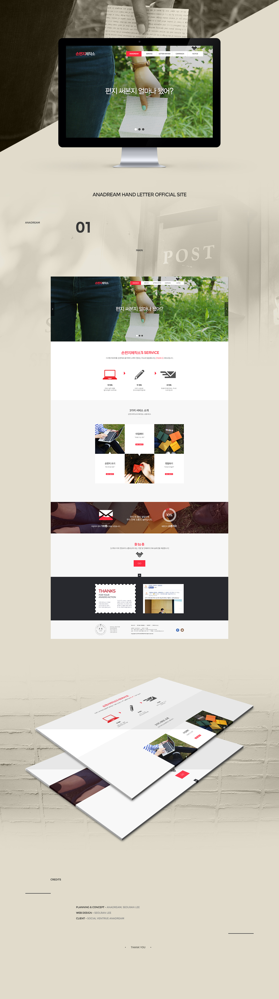

- Anadream Hand Letter Official Site
- 클라이언트가 홈페이지를 통해 감성적인 컨셉이 돋보이길 원하셨기 때문에 main visual 이미지를 이에 걸맞게 채택하고, main color를 따뜻한 빨간 계열 색으로 선택했다. 또한, 공간활용을 넓게 해 가독성을 높였다. 픽토그램을 사용해 홈페이지가 제공하는 서비스의 내용을 사용자들이 한눈에 이해하기 쉽도록 디자인하였다.
-
Concept:Emotional, Clear
Date:2015.04
Color:blackwhitelightgray
Skills:Phostoshop
-
Client:Social Ventrue Anadream
My role:Plan, Concept, Design
- 